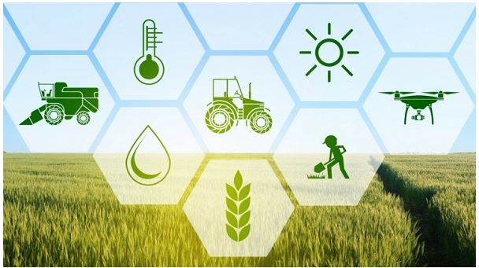

{kind=link}
About Me
I am passionate about catalyzing positive change in Africa's agricultural landscape.
A firm belief in the continent's untapped potential, I specialize in leveraging advanced data collection, analysis, and technology to bridge the gap between Africa's rich agricultural resources and comprehensive utilization.
My dedication lies in addressing the critical need for enhanced data-driven solutions amidst rising challenges of food security and global warming.
Together, let's unlock Africa's agricultural brilliance for sustainable growth and prosperity."
Why Sustainable Agriculture
As an advocate for sustainable agriculture, I recognize the transformative potential of integrating machine learning into this vital sector.
Addressing the persistent gap in leveraging available agricultural data and overcoming precision farming challenges requires a substantial increase in investment towards the fusion of machine learning and sustainable practices.
Leveraging my background in civil engineering, I bring a methodical approach to system creation, deeply understanding infrastructure dynamics. This unique amalgamation of machine learning expertise and civil engineering insights positions me at the forefront of developing tailored solutions that precisely align technology with sustainable agricultural pursuits.
For paternership you can send us an email @norahkiabthi@gmail.com
For further information you can click to our completed projects/Ongoing projects